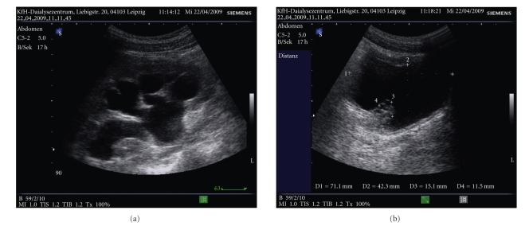
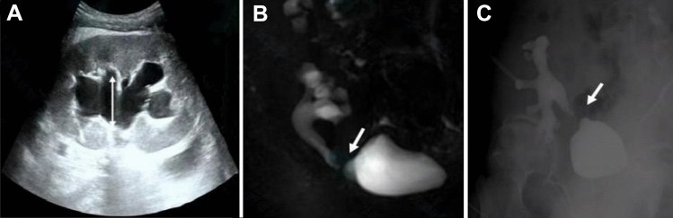

3067 — Hẹp niệu quản do BK polyomavirus sau ghép thận: hẹp đoạn dài, khi nào giảm miễn dịch thay vì nong
Tags: pattern:hep-nieu-quan pattern:hep-dai-doan pattern:gian-dai-he-nieu pattern:day-thanh-nieu-quan vung:than-ghep vung:he-nieu vung:tieu-khung protocol:sieu-am-Doppler protocol:CT-urography protocol:MR-urography score:BK-viral-load
Mức chắc chắn (certainty): tổng hợp y văn (literature synthesis) — ghép đoàn hệ 471 ca ghép thận về hẹp niệu quản (Front Nephrol 2026, PMC13645714), đồng thuận quốc tế lần 2 về BKPyV (Transplantation 2024, PMC11335089), 44 ca hẹp niệu quản được điều trị nội soi (World J Urol 2023, PMID 37340277), đoàn hệ 1.058 ca về tiên lượng BK viremia (Clin Transplant 2025, PMID 41055587) và các ca báo cáo có ảnh (PMC2948899, PMC10406706). Không có ca do nhóm tự chụp.
Câu hỏi thực hành: nam 58 tuổi, ghép thận 8 tháng, creatinin 1,4 → 2,1 mg/dL, siêu âm thấy ứ nước độ II, BK PCR huyết tương 18.000 copies/mL. Đây là hẹp do thiếu máu miệng nối hay hẹp do BK, và nong bóng lần nữa có ích không? Bài chốt ba quyết định: (1) hẹp muộn > 3 tháng + đoạn dài + có BK trong máu → nghĩ BK, không phải hẹp thiếu máu đơn thuần; (2) giảm ức chế miễn dịch là điều trị nền, giải áp bằng stent/dẫn lưu chỉ để cứu thận; (3) nong lặp lại ở hẹp muộn ít hiệu quả — sau khi virus được kiểm soát mới tạo hình. Nối 3011 – Biến chứng niệu quản sau ghép thận, 190 – Sỏi đường niệu trên & sỏi thận ghép, 1750 – UTUC ở thận ghép.
1. Tổng quan bệnh học – cơ chế hình ảnh: vì sao BK chọn đúng niệu quản mảnh ghép
- Virus học: BK polyomavirus (BKPyV) là virus ADN vòng, không vỏ; 80–90% người trưởng thành có huyết thanh dương và virus tồn tại tiềm tàng trong tế bào biểu mô niệu (urothelium). Ghép thận + ức chế miễn dịch làm virus tái hoạt, đi từ tiểu máu virus (viruria) → nhiễm virus huyết (viremia) → bệnh thận do BK (BKPyV-nephropathy).
- Vì sao tổn thương lại ở niệu quản: BK sinh sản trong tế bào biểu mô niệu quản → phù nề, bong tróc, viêm rồi xơ hóa thành niệu quản. Niệu quản mảnh ghép chỉ còn một nguồn máu duy nhất từ động mạch thận (đoạn xa sát bàng quang là nơi tưới máu kém nhất) → thiếu máu + viêm do virus = hai đòn đánh vào cùng một đoạn, nên hẹp thường muộn, dài và tái phát hơn hẹp thiếu máu đơn thuần.
- TẠI SAO hẹp do BK "đoạn dài": viêm do virus lan theo chiều dọc niệu quản chứ không khu trú đúng miệng nối; xơ hóa tiến triển từng đợt → thành niệu quản dày, cứng, lòng hẹp đều. Hẹp thiếu máu kinh điển thì ngắn, đúng miệng nối, vì tổn thương khu trú tại chỗ mạch nuôi tận cùng.
- TẠI SAO ứ nước xuất hiện muộn: hẹp tiến triển chậm, bể thận giãn dần; creatinin chỉ tăng khi hẹp đã đáng kể hoặc khi có đợt nhiễm trùng. Vì vậy siêu âm định kỳ phát hiện trước khi có triệu chứng.
- Ngưỡng định lượng phải thuộc:
| Biến số | Số liệu | Nguồn |
|---|---|---|
| Hẹp niệu quản sau ghép thận | 6,37% (30/471 ca); y văn 0,5% đến > 20% | Front Nephrol 2026, PMC13645714 |
| BK niệu / BK máu ở nhóm hẹp so với không hẹp | 26,7% vs 7,0% (p = 0,002) / 26,7% vs 8,6% (p = 0,005) | PMC13645714 |
| Sống còn mảnh ghép (death-censored) 3 năm | 79,7% vs 93,3% (p = 0,01) | PMC13645714 |
| Bệnh thận do BK ở người ghép thận | 5–10%; 50–80% trong số đó mất mảnh ghép | Nephrol Dial Transplant 2021, PMID 31891401 |
| BK máu: "có thể" / "giả định" bệnh thận do BK | > 1.000 copies/mL kéo dài > 2 tuần / > 10.000 copies/mL | Transplantation 2024, PMC11335089 |
| Thời điểm hẹp (trung vị) và chiều dài hẹp | 3,5 tháng (IQR 1,9–10,8) / 10 mm (IQR 7–20) | World J Urol 2023, PMID 37340277 |
| Hẹp khởi phát muộn > 3 tháng → thất bại nội soi | RR 2,00 (95% CI 1,01–3,95) | PMID 37340277 |
| Nong/nội soi thành công chung | 61% ở theo dõi trung vị 44,6 tháng | PMID 37340277 |
- Phản biện quan trọng: một đoàn hệ 1.058 ca theo dõi trung vị 9,7 năm không thấy BK viremia làm tăng hẹp niệu quản (0,8% vs 0,4%, p = 0,63), dù BK máu > 10.000 copies/mL làm tăng kháng thể kháng mảnh ghép de novo (HR 1,71) và thải ghép cấp có sinh thiết (HR 2,11) (Clin Transplant 2025, PMID 41055587). Diễn giải đúng: BK là dấu chỉ của ức chế miễn dịch mạnh và viêm niệu quản, không chắc là nguyên nhân độc lập — vì vậy không quy mọi hẹp muộn cho BK khi chưa có PCR; nhưng khi hẹp + BK máu dương, phải xử lý cả hai.
2. Mẫu hình + chẩn đoán phân biệt theo thời điểm và vị trí (gamut)
- Gamut theo thời điểm — hỏi "bao lâu sau ghép" trước khi đọc ảnh:
| Thời điểm | Nguyên nhân hay gặp | Vì sao |
|---|---|---|
| < 90 ngày | Hẹp thiếu máu tại miệng nối, rò nước tiểu, lymphocele chèn ép, cục máu/stent lệch | Miệng nối chưa lành, đầu xa niệu quản thiếu máu |
| 90 ngày – 2 năm | Hẹp do BK, xơ hóa thiếu máu muộn, lymphocele, sỏi, nhiễm trùng niệu quản | Virus tái hoạt mạnh nhất trong năm đầu; xơ hóa tiến triển |
| > 2 năm | Hẹp xơ muộn, ung thư biểu mô niệu quản (UTUC) liên quan BK, sỏi, hẹp tái phát sau can thiệp | BK có tính sinh ung thư; tổn thương mạn |
Gamut theo hình thái — "hẹp ngắn hay dài" quyết định thái độ:
- Ngắn (< 1 cm), đúng miệng nối, bờ nhẵn: thiếu máu/xơ miệng nối; nong bóng có vai trò.
- Dài (> 1–3 cm), lan tỏa, thành dày, có thể đa ổ: nghĩ BK, xơ hóa sau viêm, hoặc UTUC lan theo niệu quản.
- Hẹp do chèn ép từ ngoài: lymphocele/khối dịch — niệu quản di lệch trục, hẹp mềm, có khối dịch bên cạnh.
- Hẹp + khối trong lòng: sỏi cản quang, UTUC (khuyết lòng), cục máu.
Gamut "ứ nước + hẹp niệu quản mảnh ghép" (5 nhóm chính): BK/xơ hóa sau viêm · thiếu máu miệng nối · lymphocele/khối dịch chèn · sỏi/stent vôi hóa · UTUC hoặc tái phát bệnh nền.
3. Bảng so sánh phân biệt (ma trận đối chiếu)
| Thực thể (entity) | Hình ảnh điển hình (US/CT/MRU) | Chốt vào (rule-in) | Chốt loại (rule-out) | Gợi ý xác nhận |
|---|---|---|---|---|
| Hẹp do BK | Hẹp đoạn dài/lan tỏa, thành niệu quản dày, ứ nước trên chỗ hẹp; không có khối trong lòng | BK PCR máu dương + hẹp muộn > 3 tháng + đoạn dài | Hẹp ngắn đúng miệng nối, PCR âm → nghĩ thiếu máu | BK PCR huyết tương, US Doppler, CT/MR niệu đồ; sinh thiết niệu quản chỉ khi nghi UTUC |
| Hẹp thiếu máu miệng nối | Hẹp ngắn (< 1 cm), đúng UVJ, bờ nhẵn, thường < 90 ngày | Hẹp ngắn tại miệng nối + không có BK | Hẹp dài, đa ổ, khởi phát muộn → loại | CT/MR niệu đồ; đo chiều dài hẹp; PCR BK |
| Lymphocele chèn ép | Khối dịch không ngấm, đè đẩy niệu quản; hẹp mềm, dài, lệch trục | Khối dịch sát niệu quản + hẹp đúng đoạn bị đè | Không có khối dịch, hẹp cố định → loại | US + CT; dẫn lưu/xơ hóa khối dịch rồi chụp lại |
| UTUC mảnh ghép/niệu quản | Khuyết lòng hoặc dày thành khu trú, ngấm thuốc; ứ nước; có thể nhân BK+ | Khối/dày thành khu trú + tế bào học dương | Hẹp đều, không khối, tế bào học âm | CT niệu đồ, nội soi niệu quản + sinh thiết (không nong mù) |
| Sỏi/stent vôi hóa | Cản quang trong lòng, bóng sáng trên X-quang; stent lưu lâu bị vôi | Hình cản quang di chuyển theo niệu quản | Không có hình cản quang rời | CT liều thấp; soi niệu quản |
| Giãn không tắc | Giãn toàn bộ đài bể thận, không có chỗ chuyển tiếp; giảm sau khi bàng quang rỗng | Giãn giảm sau đi tiểu + không chỗ hẹp | Có chỗ chuyển tiếp + chênh áp → tắc thật | US sau đi tiểu, MAG3 có lợi tiểu |

J Transplant 2010 (PMC2948899), CC BY 3.0: bệnh nhân 18 tuổi sau ghép tế bào gốc đồng loài, suy thận, BK niệu/BK máu; (a) thận phải ứ nước độ III–IV, nhu mô giảm nhiều; (b) bàng quang có tổn thương dạng khối do viêm niệu mạc do BK. Đây là bằng chứng "BK gây hẹp niệu quản hai bên", không chỉ thận ghép.
Int Urol Nephrol 2023 (PMC10406706), CC BY 4.0: (A) siêu âm — ứ nước thận ghép, bể thận tách khoảng 20 mm (mũi tên trắng); (B) MR niệu đồ — hình 3D cho thấy vị trí và hình thái đoạn hẹp (mũi tên trắng); (C) chụp ngược dòng qua dẫn lưu — xác định độ dài và mức độ hẹp trước can thiệp (mũi tên trắng). Ba ảnh trả lời ba câu khác nhau: có tắc không – hẹp ở đâu – hẹp dài bao nhiêu.4. Protocol chụp + ngưỡng xử trí
- Sàng lọc BK (theo đồng thuận TTS 2024, PMC11335089): BK PCR huyết tương hằng tháng đến tháng 9, sau đó mỗi 3 tháng đến 2 năm sau ghép; nếu 1.000–10.000 copies/mL → xét nghiệm lại sau 2–3 tuần; nếu > 10.000 copies/mL hoặc kéo dài > 1.000 copies/mL > 2 tuần → giảm ức chế miễn dịch và theo dõi 2–4 tuần/lần đến khi âm tính.
- Chẩn đoán hình ảnh khi có ứ nước hoặc creatinin tăng:
- Bước 1 — siêu âm Doppler mảnh ghép: đo đường kính trước–sau bể thận (mm), độ dày nhu mô, RI, dịch quanh thận; cho bệnh nhân đi tiểu rồi đo lại để loại giãn sinh lý.
- Bước 2 — CT niệu đồ (CT urography) có cản quang, thì bài tiết 5–10 phút: xác định chỗ chuyển tiếp, đo chiều dài hẹp, tìm sỏi/khối. Ở bệnh nhân suy thận hoặc trẻ → MR niệu đồ (MRU) thay thế.
- Bước 3 — chụp ngược dòng/thận đồ: bơm qua dẫn lưu hoặc soi bàng quang để đo chính xác đoạn hẹp và đặt stent; MAG3 có lợi tiểu khi cần đánh giá chức năng.
- Ngưỡng chọn can thiệp (theo EAU, trích trong bài 3011/PMC12169748):
- < 1 cm: nong bóng/cắt nội soi là lựa chọn đầu, thành công cao nhất.
- 1–3 cm: nội soi có thể thử nhưng thành công < 50% khi > 1 cm → cân nhắc tạo hình sớm.
- > 3 cm, tái phát, hoặc khởi phát muộn > 3 tháng: tạo hình niệu quản (cấy lại niệu quản, Boari flap, psoas hitch, nối niệu quản gốc).
- BK đang hoạt động: ưu tiên giảm ức chế miễn dịch + giải áp (JJ stent hoặc dẫn lưu thận qua da) để cứu thận; tránh nong lặp lại khi virus còn cao vì niêm mạc đang viêm, dễ hẹp lại và nhiễm trùng.
- Giảm ức chế miễn dịch theo bậc (PMC11335089): giảm antimetabolite ≥ 50% trước; nếu BK máu không giảm 10 lần sau 4 tuần → ngừng antimetabolite, giảm corticoid còn 5–10 mg/ngày; nếu vẫn cần → giảm CNI (tacrolimus đích 5 ng/mL, cyclosporine 100 ng/mL). Không có kháng virus được cấp phép; leflunomide/cidofovir/fluoroquinolone không được khuyến cáo thường quy (bằng chứng yếu).
flowchart TD
A[Ghép thận + creatinin tăng hoặc ứ nước] --> B[Siêu âm Doppler: đo bể thận, RI, dịch quanh thận]
B --> C[BK PCR huyết tương + creatinin]
C --> D{BK > 1000 copies/mL?}
D -->|Không| E[Hẹp thiếu máu/xơ: đo chiều dài hẹp trên CT/MR niệu đồ]
D -->|Có| F[Giảm ức chế miễn dịch theo bậc + theo dõi 2-4 tuần/lần]
F --> G{Có tắc hoặc nhiễm trùng?}
G -->|Có| H[Giải áp: JJ stent hoặc dẫn lưu thận qua da]
G -->|Không| I[Theo dõi BK PCR + siêu âm]
H --> J[BK âm hoặc < 1000 copies/mL ổn định?]
J -->|Chưa| F
J -->|Rồi| K{Còn hẹp > 1 cm hoặc tái phát?}
K -->|Không| L[Theo dõi định kỳ, không nong lặp lại]
K -->|Có| M[Tạo hình niệu quản sau khi kiểm soát virus]
E --> N{Chiều dài hẹp?}
N -->|< 1 cm| O[Nong bóng/cắt nội soi]
N -->|1-3 cm| P[Cân nhắc nội soi hoặc tạo hình]
N -->|> 3 cm hoặc tái phát| M
5. Biến thể bình thường và cạm bẫy
- Bẫy 1 — "ứ nước = tắc": sau ghép, đài bể thận mất trương lực hoặc bàng quang đầy gây giãn giả; phải đi tiểu/rút bóng rồi đo lại, tìm chỗ chuyển tiếp và chênh áp trước khi đặt stent.
- Bẫy 2 — hẹp muộn luôn bị gọi "xơ thiếu máu": hẹp > 3 tháng, đoạn dài, thành dày phải làm BK PCR; bỏ sót BK thì nong bao nhiêu lần cũng hẹp lại và làm nặng thêm.
- Bẫy 3 — UTUC trá hình hẹp: BK có tính sinh ung thư; dày thành khu trú/khối trong lòng trên nền hẹp "lan tỏa" phải nội soi + sinh thiết, không nong mù (xem 1750, 1724).
- Bẫy 4 — giảm ức chế miễn dịch gây thải ghép: BK máu > 10.000 copies/mL làm tăng thải ghép cấp HR 2,11 và DSA de novo HR 1,71 (PMID 41055587); phải theo dõi creatinin, protein niệu và DSA sau mỗi lần giảm thuốc.
- Bẫy 5 — nhiễm trùng niệu quản không chỉ do BK: CMV cũng gây viêm niệu quản và hẹp (Korean J Intern Med 2012, PMC3529250); ở bệnh nhân ghép nên làm PCR CMV/BK song song khi tổn thương niệu mạc lan tỏa.
- Bẫy mặt cắt: dịch trong bể thận đậm trên T2 dễ nhầm với nang cạnh bể thận; dùng MRU/CT thì muộn và tái tạo vành/dọc để thấy chỗ nối với niệu quản. Trên CT không cản quang, stent JJ tạo vệt tăng đậm giả "sỏi" — đọc trên cửa sổ xương và thì trước cản quang.
6. Tự lượng giá — Blind Quiz
Ca 1 — 18 tuổi, suy thận sau ghép tế bào gốc, BK niệu dương.
- Gợi ý lâm sàng: bệnh nhân T-ALL sau ghép tế bào gốc đồng loài, nhập viện vì suy thận; BK PCR trong máu và nước tiểu dương.
- Câu hỏi: (a) và (b) cho thấy gì? Vì sao BK có thể gây hẹp niệu quản hai bên dù bệnh nhân không ghép thận?
Bấm để hiện đáp án (findings + chẩn đoán)
- Dấu hiệu (findings): (a) thận phải ứ nước độ III–IV, các đài bể thận giãn, nhu mô mỏng; (b) bàng quang có tổn thương dạng khối/niêm mạc dày do viêm niệu mạc do BK.
- Chẩn đoán (diagnosis): hẹp niệu quản hai bên do BK polyomavirus (biến chứng niệu mạc của tái hoạt BK), không phải hẹp do thiếu máu miệng nối.
- Vì sao: BK tồn tại tiềm tàng trong biểu mô niệu toàn bộ đường niệu; ức chế miễn dịch sau ghép tế bào gốc đủ để gây viêm – phù – xơ hóa niệu quản, không cần có mảnh ghép thận.
- Nguồn ảnh: J Transplant 2010 (PMC2948899), CC BY 3.0.
Ca 2 — Ứ nước thận ghép: chọn đúng phương thức để đo chiều dài hẹp.
- Gợi ý lâm sàng: bệnh nhân ghép thận, creatinin tăng, siêu âm thấy ứ nước; cần quyết định nong hay tạo hình.
- Câu hỏi: Ba ảnh (A–C) trả lời ba câu hỏi nào? Muốn chọn giữa nong và tạo hình, số đo nào là quan trọng nhất?
Bấm để hiện đáp án
- Dấu hiệu (findings): (A) siêu âm — ứ nước, bể thận tách ~20 mm; (B) MR niệu đồ — hình 3D hiển thị vị trí và hình thái đoạn hẹp; (C) chụp ngược dòng — xác định độ dài và mức độ hẹp.
- Chẩn đoán (diagnosis): hẹp niệu quản mảnh ghép; quyết định dựa trên chiều dài hẹp: < 1 cm** → nong; **1–3 cm** → cân nhắc; **> 3 cm/tái phát → tạo hình.
- Vì sao: nong chỉ thắng khi tổn thương ngắn, không thiếu máu; hẹp dài do BK/xơ hóa có thành niệu quản đã mất đàn hồi, nong xong hẹp lại.
- Nguồn ảnh: Int Urol Nephrol 2023 (PMC10406706), CC BY 4.0.
Ca 3 — Ca quyết định (không có ảnh): 58 tuổi, ghép thận 8 tháng, BK 18.000 copies/mL.
- Gợi ý lâm sàng: creatinin 2,1 mg/dL, siêu âm ứ nước độ II, CT niệu đồ thấy hẹp lan tỏa 2,5 cm đoạn giữa niệu quản ghép; không sốt.
- Câu hỏi: Ba việc cần làm theo thứ tự? Có nên nong bóng ngay không?
Bấm để hiện đáp án
- Bước 1: giảm ức chế miễn dịch theo bậc (antimetabolite ≥ 50%, theo dõi BK PCR 2–4 tuần/lần) — đây là điều trị nền, vì không có kháng virus đặc hiệu.
- Bước 2: giải áp bằng JJ stent hoặc dẫn lưu thận qua da nếu có tắc đáng kể/nhiễm trùng; theo dõi creatinin và nước tiểu.
- Bước 3: chờ virus kiểm soát (BK < 1.000 copies/mL ổn định hoặc âm) rồi **tạo hình niệu quản** nếu còn hẹp > 1 cm — không nong lặp lại vì hẹp muộn, dài 2,5 cm dự báo thất bại nội soi (RR 2,00 cho khởi phát muộn).
- Cạm bẫy: giảm thuốc có thể gây thải ghép cấp — phải theo dõi creatinin/DSA; và đừng quên tầm soát UTUC nếu thành niệu quản dày khu trú.
Bài liên quan chéo
- 100 – Tổng quan hệ Bụng
- 3011 – Biến chứng niệu quản sau ghép thận: hẹp miệng nối & rò nước tiểu
- 190 – Sỏi đường niệu trên & sỏi thận ghép
- 189 – Đánh giá tiết niệu trước ghép thận
- 1750 – UTUC ở bệnh nhân thận ghép
- 1724 – UTUC: dấu "goblet" & "stipple"
Ảnh
- 2 ảnh: 1 ảnh CC BY 3.0 (J Transplant 2010, PMC2948899) + 1 ảnh CC BY 4.0 (Int Urol Nephrol 2023, PMC10406706) — nguyên bản, không crop/ghép; chi tiết trong
images/CREDITS.md. - Không tạo composite vì hai ảnh khác modality và khác license; không dùng ảnh từ bài CC BY-NC-ND.
Không dùng để chẩn đoán độc lập khi chưa có người hướng dẫn.